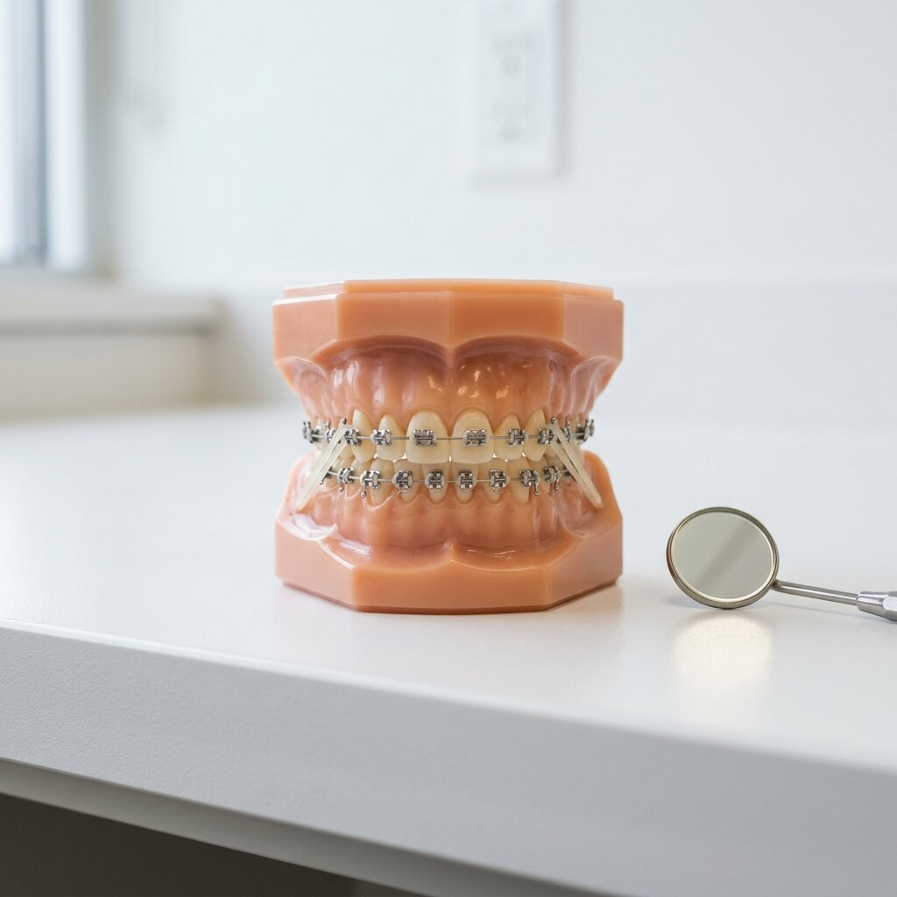
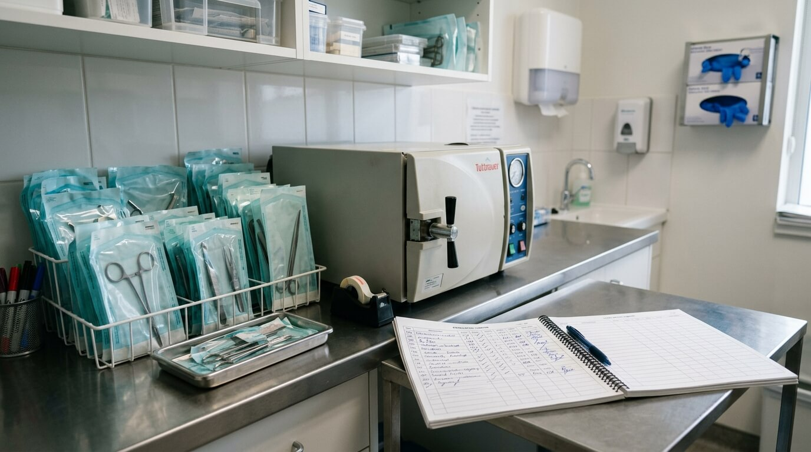

Preventie
5 Tips voor Gezonde Tanden en Tandvlees
Ontdek de beste dagelijkse gewoontes om uw gebit een leven lang gezond te houden.
Lees meer
Moderne tandheelkunde met persoonlijke aandacht. Van reguliere controles tot geavanceerde implantaten — wij zorgen voor een stralende, gezonde glimlach.
Van preventieve controles tot cosmetische behandelingen — ons ervaren team staat voor u klaar met de nieuwste technieken en apparatuur.
Regelmatige controles en professionele gebitsreiniging voor een optimale mondgezondheid. Preventie staat bij ons voorop.
Meer infoDuurzame, esthetische restauraties met hoogwaardige materialen. Onzichtbare vullingen en op maat gemaakte kronen.
Meer infoPermanente oplossing voor ontbrekende tanden. Onze implantologen gebruiken 3D-planning voor maximale precisie.
Meer infoOnzichtbare beugels en aligners voor een perfect gebit. Geschikt voor zowel kinderen als volwassenen.
Meer infoTanden bleken, veneers en smile makeovers. Wij creeren de glimlach waar u altijd van heeft gedroomd.
Meer infoUitgebreide mondhygiene-behandelingen door geregistreerde mondhygienisten. Voorkom tandvleesaandoeningen.
Meer info

Bij TandZorg Amsterdam combineren we jarenlange ervaring met de nieuwste technologieen in tandheelkunde. Ons team van specialisten staat klaar om u de best mogelijke zorg te bieden in een ontspannen sfeer.
We geloven dat iedereen recht heeft op een gezonde, mooie glimlach. Daarom bieden we behandelingen op maat, afgestemd op uw persoonlijke wensen en behoeften.


"Eindelijk een tandarts waar ik me op mijn gemak voel. Het team is ongelooflijk vriendelijk en de behandeling was pijnloos."
"Mijn implantaatbehandeling was perfect. Van consultatie tot plaatsing, alles werd helder uitgelegd. Zeer aan te raden!"
"De onzichtbare beugel heeft mijn glimlach compleet veranderd. Professioneel, modern en altijd op tijd. Top tandarts!"
Ontdek de beste dagelijkse gewoontes om uw gebit een leven lang gezond te houden.
Lees meerEen compleet overzicht van het implantaatproces, van consultatie tot nazorg.
Lees meerWaarom professioneel bleken beter werkt dan thuismiddelen en wat u kunt verwachten.
Lees meerModerne technieken en een rustige aanpak maken tandartsbezoek stressvrij.
Lees meerSteeds meer volwassenen kiezen voor aligners. Lees waarom en hoe het werkt.
Lees meerWaarom halfjaarlijkse controles bij de mondhygienist essentieel zijn.
Lees meer
Boek vandaag nog uw gratis consult en ontdek wat TandZorg voor u kan betekenen. Ons team staat klaar om u te verwelkomen.